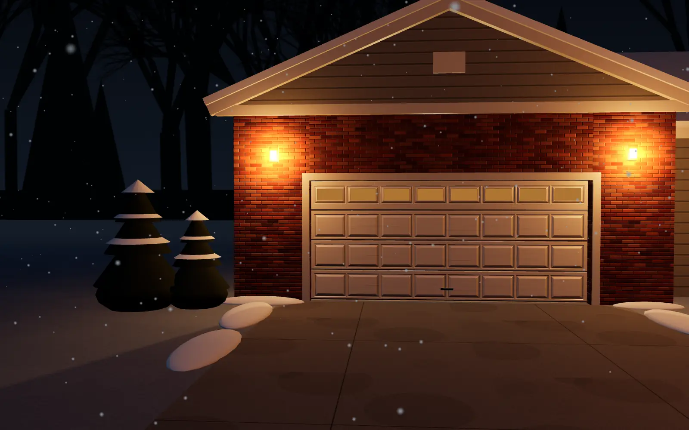
Garage door repair across Chicagoland
Broken springs, tired openers, doors off their track, and new doors when it's time. Serving the north and west suburbs, from Waukegan to Naperville, with one local tech who picks up his own phone.
Garage doors that go up every morning, all over Chicagoland.
Out in the suburbs, the garage is the real front door. It opens and closes more than any other door in the house.
Twice a day, every day, through July heat and January ice. North Point keeps it running.
Why Ben went out on his own
Ben spent years installing and repairing garage doors for a bigger company. He saw the upsells, the rushed jobs and the second visits that never should have happened. North Point is the way he wanted to do it all along: one tech, a price you agree to before he starts, and a door that works when he drives away.
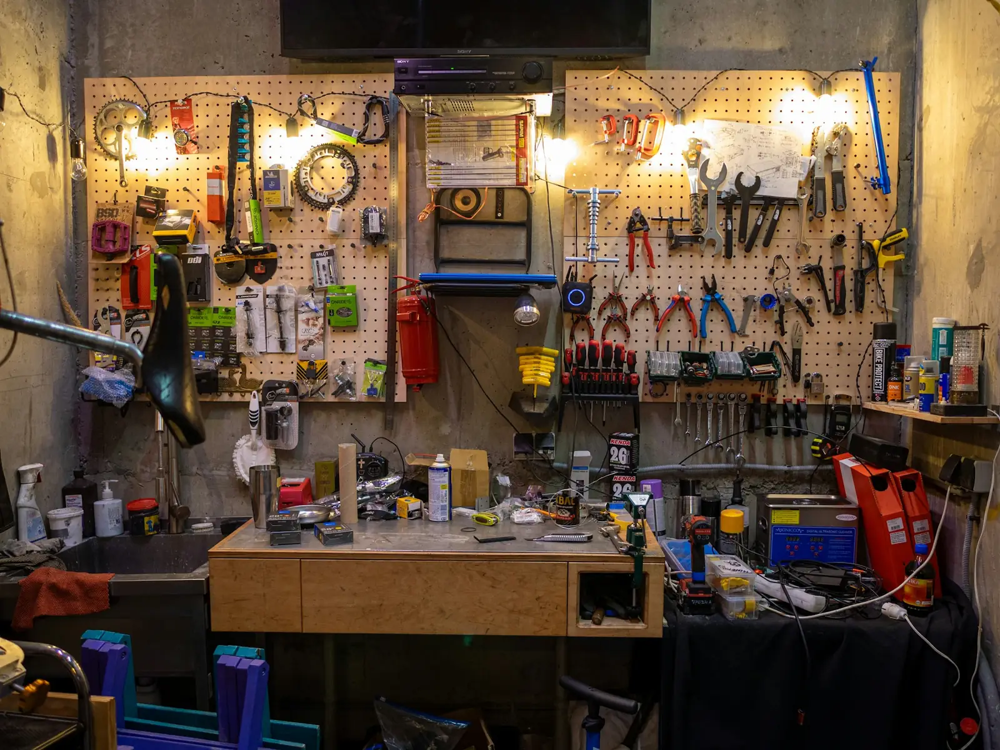
- Licensed & insuredProof on request, every job.
- Price in writingBefore any work starts.
- Parts on the truckMost repairs finished in one visit.
Why garage door springs break
The part that does the lifting
Your garage door can weigh 150 pounds or more. A steel spring above it carries nearly all of that.
Every open and close
Each trip up and down is one cycle. A standard spring is built for about ten thousand of them.
Then winter shows up
Cold steel is brittle steel. That's why so many springs give out on the first freezing mornings.
Snap
It sounds like a gunshot in the garage. Leave the door closed, don't pull on it, and call.
Call about a broken springWhat Ben fixes
Residential garage doors of every common make. If it lifts, rolls or beeps, he works on it.
- Springs Torsion and extension springs, replaced as a pair and balanced to your door.
- Openers Repairs, replacements and smart openers. Remotes, keypads and safety sensors set up.
-
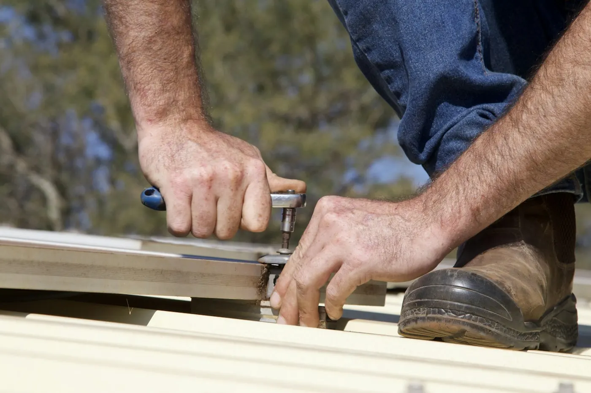
Off track Crooked door or a snapped cable? He re-hangs it and replaces cables, rollers and hinges. -
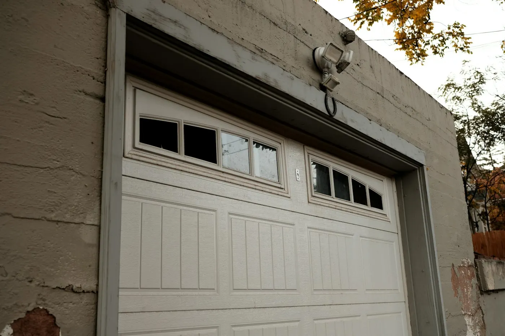
Panels Dented or cracked sections swapped out and matched to the rest of your door. -
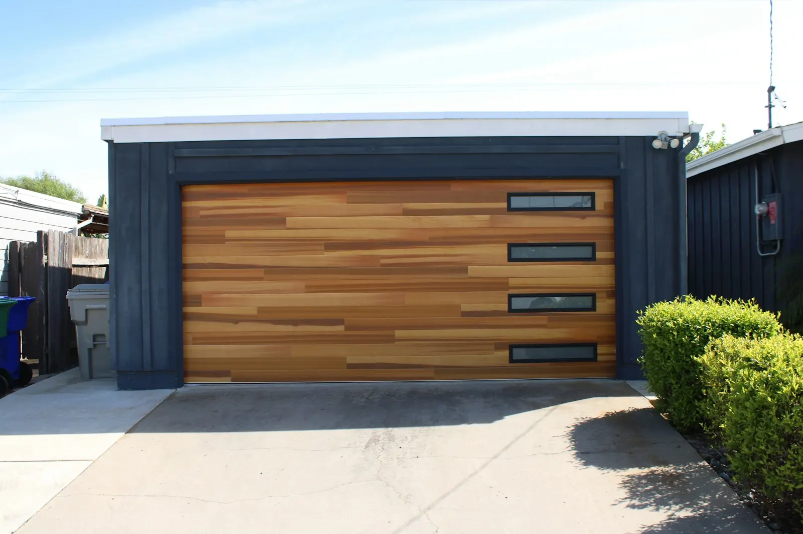
New doors Insulated steel, carriage, wood-look and full-view glass. Measured, delivered and installed.
Doors he installs
Pick a look. Ben brings samples, measures the opening and handles the old door's removal.
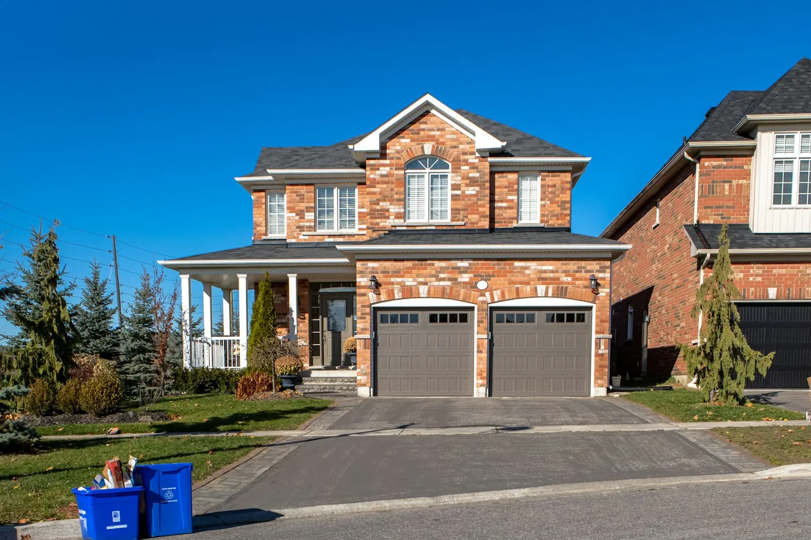
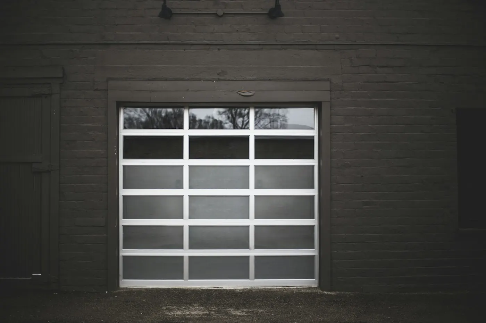
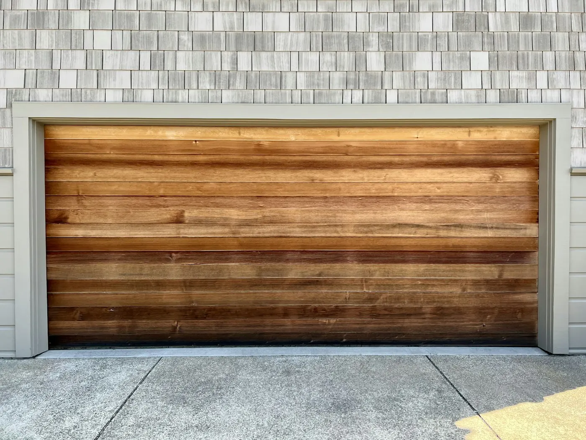
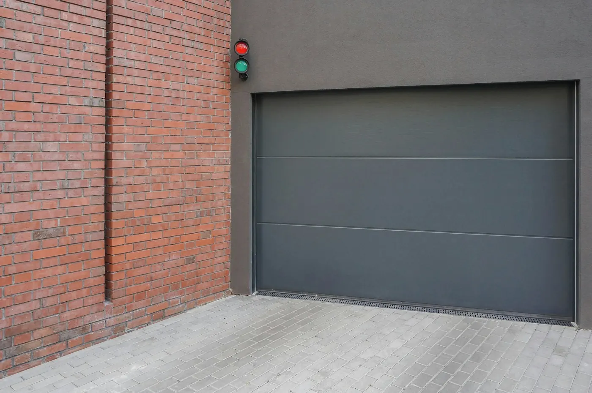
How a visit works
-
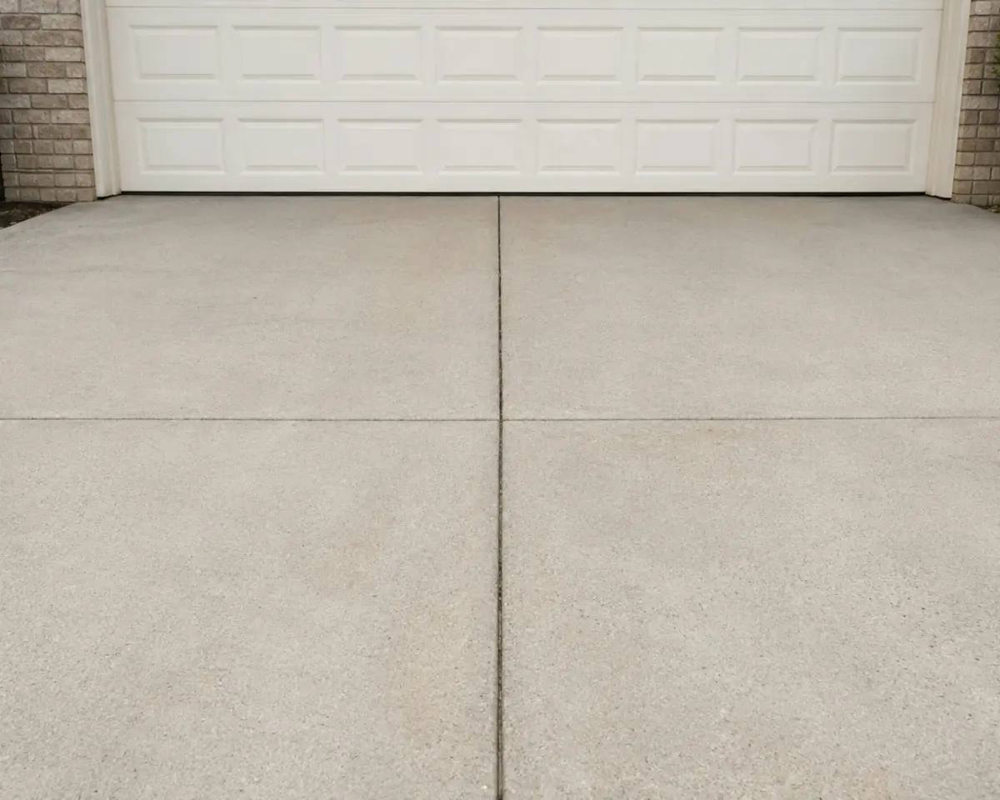
1Call or text
You talk to Ben, not a call center. Tell him what the door is doing and send a photo if you can.
-
2
Price before work
He finds the problem and gives you the price in writing. Nothing gets touched until you say yes.
-
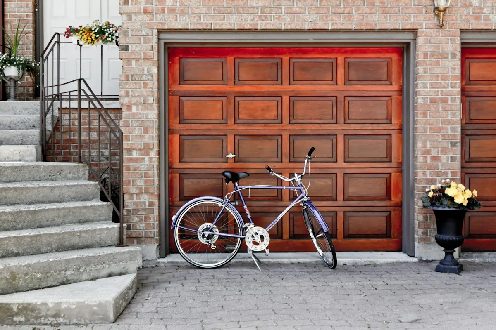
3Fixed and tested
Every job ends with a balance check, a sensor test and fresh lubricant. Then he sweeps up.
North and west suburbs
North from Evanston and Schaumburg up to Waukegan, Round Lake and Woodstock. West from Elmhurst out through Naperville, Aurora and St. Charles to Yorkville and DeKalb.
Right on the edge? Call or text anyway. Ben will tell you straight.
What neighbors say
Sample reviews for this demo. Real Google reviews will appear here.
Spring snapped at 6am in January. Ben was in our driveway by nine and the car was out by ten.
He told us the opener was fine and only the sensors needed lining up. Twenty minutes. Who does that?
Price on paper before he started, and that's exactly what we paid.
New insulated door, old one hauled away, garage swept. Quietest door on the block.
Door came off the track after my kid backed into it. Ben had it hanging straight the same afternoon.
Questions people ask Ben
Can I open the door if the spring is broken?
Please don't. The opener isn't built to lift the door's full weight, and a door without spring tension can drop fast. Leave it closed, unplug the opener and call.
How much will my repair cost?
It depends on the part and your door. Ben looks first, then gives you the exact price in writing. No surprises on the invoice.
Should I repair my door or replace it?
If the door is under 15 to 20 years old and one part failed, repair is usually the better value. If it's rusted through, badly bent or failing again and again, he'll show you why a new door makes more sense.
Do you work on all opener brands?
Yes. LiftMaster, Chamberlain, Genie, Craftsman, Linear and most others. He can also add smartphone control to many existing openers.
Which towns do you cover?
The north suburbs, from Evanston, Skokie and Schaumburg up through Arlington Heights, Mundelein, Crystal Lake, McHenry, Woodstock and Waukegan. And the west suburbs, from Elmhurst and Wheaton out to Naperville, Aurora, St. Charles, Plainfield, Yorkville and DeKalb.
When can you come out?
Usually the same day or the next morning for repairs. New doors are scheduled once the door is ordered.
Tell Ben what your door is doing
Fill this in and he'll call you back with a time and a price range. In a hurry? Call or text.
(224) 605-1062Good night, Chicagoland.